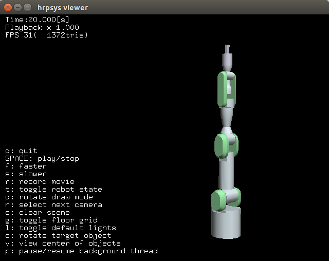

Run your first simulation¶
hrpsys-simulator command¶
The hrpsys-simulator command loads and runs a simulation. It is called like follows:
$ hrpsys-simulator [project file] [options]
Where project file is the xml file which defines simulation world (explained later).
The hrpsys-simulator command has following options:
-
-nodisplay¶ Headless mode.
-
-realtime¶ Synchronize to real world time.
-
-usebbox¶ Use bounding box for collision detection.
-
-endless¶ Endless mode.
-
-showsensors¶ Visualize sensors.
-
-size[pixels]¶ Specify window size in pixels.
-
-no-default-lights¶ Disable ambient light (simulation environment will be dark).
-
-max-edge-length[value]¶ Specify maximum length of polygon edge (if exceed, polygon will be divided to improve rendering quality).
-
-max-log-length[value]¶ Specify maximum size of the log.
-
-exit-on-finish¶ Exit the program when the simulation finish.
-
-record¶ Record the simulation as movie.
-
-bg[r] [g] [b]¶ Specify background color.
-
-h--help¶ Show help message.
Running the example project¶
Before you run your simulation, openhrp-model-loader need to be running. Enter following command to run the model loader:
$ openhrp-model-loader
Enter following command to start PA10 simulation:
$ hrpsys-simulator `pkg-config --variable=prefix hrpsys-base`/share/hrpsys/samples/PA10/PA10simulation.xml
Interact with the simulation window¶
You can rotate the simulation world by left click and drag.
To translate the simulation world right click and drag.
You can also use mouse wheel to zoom in and zoom out.
There is also some command to control the simulation, click the simulation window and type “h” key to see all the commands.
Click the simulation window and type “q” key to quit the simulation.
